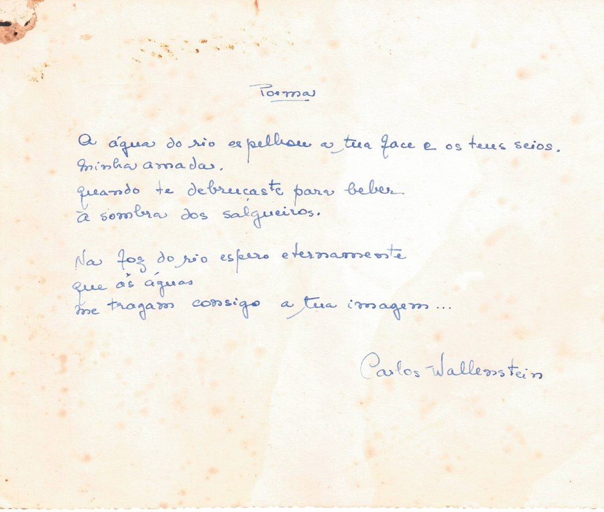
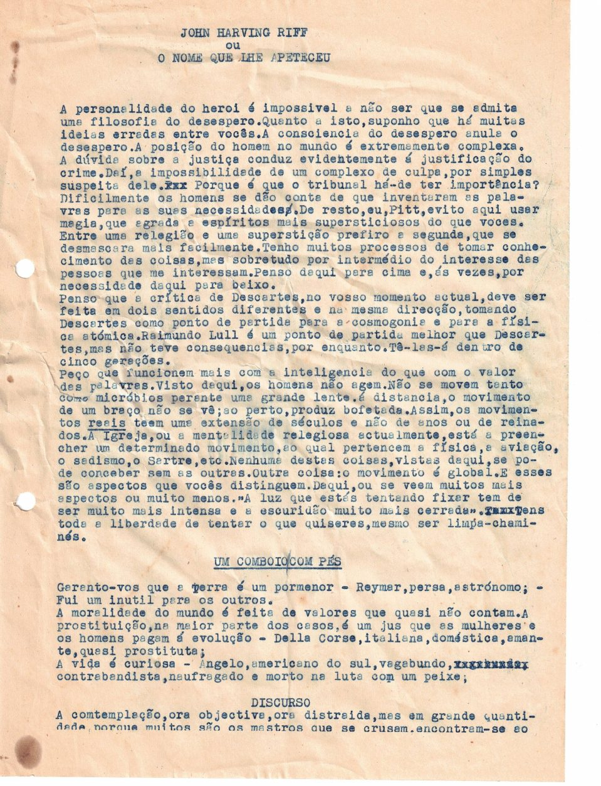
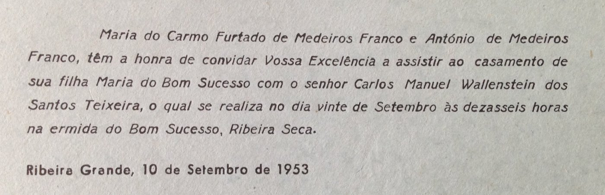

Documentos
Cartas, recortes de imprensa e outros papéis do arquivo.
Nota autobiográfica de Carlos Wallenstein (1981)
Datiloscrito de duas páginas, escrito em Ponta Delgada a 20 de Abril de 1981. É a fonte de muitas entradas da Cronologia e da Biografia. Transcrição fiel, com a ortografia e a pontuação do original; as notas entre parênteses rectos são do transcritor.


Ler a transcrição
Carlos Manuel Wallenstein dos Santos Teixeira nasceu, de famílias burguesas e aristocráticas, em Ponta Delgada (Açores) às 5h. e 20m. do dia 4 de Novembro de 1926.
Frequentou o Liceu Nacional de Antero de Quental na sua cidade natal e as Faculdades de Direito e de Letras (Ciências Histórico-Filosóficas) nas Universidades de Lisboa e de Coimbra.
A partir de 1943 CW aparece colaborando com poesia, ficção e artigos em diversos órgãos de imprensa local, v.g. em A ILHA, jornal em que então se manifestava um movimento literário e social em que interviram, nomeadamente, alguns jovens em serviço militar no arquipélago e que se cotaram nas letras portuguesas, como Joel Serrão e Egito Gonçalves. A poesia de CW tinha nesse tempo por principal interesse [palavra ilegível, riscada à máquina] os dados que lhe oferecia a vida das ilhas. Daí evoluiu, quando em contacto com outras realidades, tendo sido particularmente influenciado pelos movimentos surrealistas.
A dedicação de CW à poesia manifestou-se também pela realização de recitais que durante vários anos efectuou em diversas regiões do país, com o objectivo de expandir o amor pela poesia e o conhecimento da sua expressão contemporânea.
Sem ter nunca deixado de cultivar a literatura, nomeadamente através do conto, CW abraçou a carreira do teatro, alcançando notoriedade como actor, encenador e autor, com extensão à rádio, [ópera, acrescentado à mão] cinema, e televisão. Desde 1948 [leitura incerta: 1943/1948] a 1963 participou em movimentos de teatro estudantil, experimental e profissional, parecendo ter-se programaticamente orientado para a renovação do teatro e sua adequação à sociedade contemporânea. Em 1978 foi director de Teatro Popular-Companhia Nacional I, baseada neste objectivo, cargo em que se manteve apenas durante sete meses por incompatibilidade com as orientações dos departamentos estatais para a cultura.
Publicou diversos discos de poesia (Sassetti, 1973/74): Camões (LP), Antologia da Poesia Contemporânea (álbum, 2LP), Almada (LP).
Em 1963 ingressou nos quadros da Fundação Calouste Gulbenkian, onde actualmente é Assistente de Direcção, chefiando um departamento de teatro e assegurando, como Secretário Executivo, o Levantamento Cultural do País.
Publicou "Cinco Histórias sem Classificação Especial" (Contraponto, 1953), contos, e "Teoria da Tributação", poesia, (Sociedade de Expansão Cultural, 1966), livros há muito esgotados. Em jornais e revistas tem publicado poesia, contos, artigos e ensaios.
Ponta Delgada, 20 de Abril de 1981
Documentos institucionais e de imprensa


Originais de teatro

A censura e a imprensa do tempo
Documentos do contexto em que Carlos Wallenstein trabalhou: a Censura do Estado Novo acompanhou grande parte da sua vida profissional.


Correspondência
Cartas recebidas por Carlos Wallenstein, do arquivo de família. Reproduzem-se por decisão dos herdeiros; os direitos de autor pertencem aos remetentes ou aos seus herdeiros. Quem tiver reparos ou pedir a sua retirada pode contactar-nos (ver Direitos e utilização).


Manuscritos e inéditos

Comunicações «espíritas» de 1952
Uma curiosidade do arquivo: numa pasta com a etiqueta «Comunicações espíritas em 1952 (R. Martens Ferrão)», Carlos Wallenstein guardou as folhas de sessões em que actuava como «médium escrevente», «com a presença sempre de Mário Cesariny de Vasconcelos, Manuel de Lima (do grupo surrealista) e às vezes Luís Pacheco e outras pessoas». As mensagens, a lápis, assinam-se «Pitt». Juntam-se dois dactiloscritos humorísticos da mesma época. O conjunto está em estudo.



Encenação: Serrana
Partitura de canto e piano de Serrana, drama lírico de Alfredo Keil (versos de Henrique Lopes de Mendonça), com carimbo do Arquivo Musical do Teatro Nacional de S. Carlos, usada por Carlos Wallenstein nas suas encenações: tem notas de encenação a verde e um texto dactilografado de reflexão sobre o trabalho (talvez um esboço para o programa de S. Carlos; por confirmar).


Livros: prefácio e dedicatória
Duas páginas de livros publicados que ajudam a situar o autor: o «Do Autor» de Cinco Histórias sem Classificação Especial (1953), onde anuncia projectos futuros, e a dedicatória de O Amor das Três Laranjas, que liga à família (ver Fotografias e Origens e família). Sobre as edições, ver Obra.


Programas, convites e edições



Programas de espectáculos: Teatro Popular e Gulbenkian
Dois testemunhos ligados aos dois grandes cargos de Carlos Wallenstein no teatro: a direcção do Teatro Popular – Companhia Nacional I (1978) e o trabalho na Fundação Calouste Gulbenkian (1963–1990). Ver a Cronologia.
Jesus Cristo em Lisboa (Teatro Popular)


Tchiloli (Fundação Calouste Gulbenkian)

Recortes de imprensa

Seguir-se-ão mais manuscritos, correspondência, esboços e projectos, à medida que forem digitalizados.